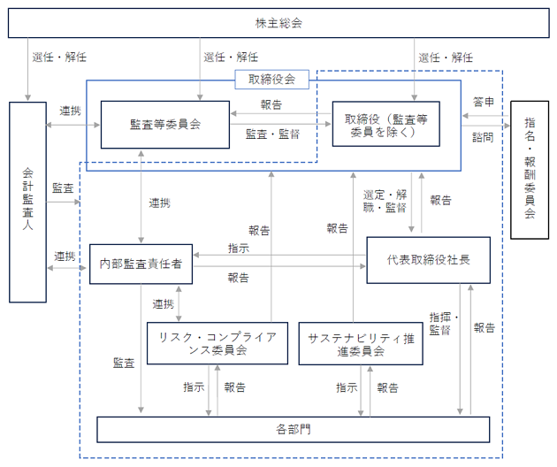

(注) 提出日現在の発行数には、2024年１月１日からこの有価証券報告書提出日までの新株予約権の行使により発行された株式数は、含まれておりません。
当社は、新株予約権方式によるストックオプション制度を採用しております。
当該制度は、会社法に基づき新株予約権を発行する方法によるものであります。
当該制度の内容は、次のとおりであります。
※ 当事業年度の末日(2023年10月31日)における内容を記載しております。なお、提出日の前月末（2023年12月31日）現在において、これらの事項に変更はありません。
(注) １．新株予約権１個につき目的となる株式数は300株であります。
なお、新株予約権割り当て後、当社が普通株式の株式分割又は株式併合を行う場合、次の算式により目的たる株式の数を調整するものとする。ただし、かかる調整は、新株予約権のうち、当該時点で行使されていない新株予約権の目的となる株式の数においてのみ行われ、調整の結果生じる１株未満の株式については、これを切り捨てるものとする。
また、当社が合併、会社分割、株式交換又は株式移転(以下総称して「合併等」という)を行う場合、株式の無償割当を行う場合、その他上記の対象株式数の調整を必要とする場合は、それぞれの条件等を勘案のうえ、合理的な範囲内で対象株式数を調整することができるものとする。
２．新株予約権の割当日以降、当社が時価を下回る価額で当社普通株式につき、新株式の発行又は自己株式の処分をする場合(新株予約権の行使により、普通株式を発行又は自己株式を処分する場合、及び種類株式の転換により、普通株式の発行又は自己株式を処分する場合を除く。)、次の算式により行使価額を調整し、調整により生じる１円未満の端数は切り上げる。なお、次の算式において、「既発行株式数」とは、当初の発行済株式総数から当社の保有する自己株式数を控除した数とする。
また、割当日以降当社が株式分割又は株式併合を行う場合、次の算式により行使価額を調整し、調整により生じる１円未満の端数は切り上げる。
さらに、割当日以降当社が他社と合併等を行う場合、株式の無償割当を行う場合、その他これらの場合に準じた行使価額の調整を必要とする事由が生じたときには、それぞれの条件を勘案のうえ、合理的な範囲で行使価額を調整するものとする。
３．新株予約権の行使の条件
① 新株予約権発行時において当社又は当社子会社の取締役、監査役及び従業員(出向社員を含む)であった者は、新株予約権行使時においても当社、当社子会社又は当社の関係会社の役員又は従業員であることを要する。ただし、当社が取締役会において、特に新株予約権の行使を認めた者については、この限りではない。なお、新株予約権を割り当てられた者(以下「新株予約権者」という)が、次の事由に該当した場合は、その後、新株予約権を行使することができない。
イ) 取締役、監査役及び従業員が、当社と競業する会社の取締役、監査役、従業員、顧問、嘱託、コンサルタント等になるなど、当社に敵対する行為又は当社の利益を害する行為を行った場合。ただし、当社が取締役会において、特に新株予約権の行使を認めた者については、この限りではない。
② 新株予約権者が死亡した場合は、相続人はこれを行使することができない。
③ 新株予約権者は、当社株券が日本国内のいずれかの金融商品取引所に上場された場合に限り、権利行使することができる。
４．当社が、合併(当社が合併により消滅する場合に限る。)、吸収分割、新設分割、株式交換又は株式移転(以上を総称して以下「組織再編行為」という)をする場合において、組織再編行為の効力発生の時点において残存する本新株予約権の新株予約権者に対し、それぞれの場合につき、会社法第236条第１項第８号のイからホまでに掲げる株式会社(以下「再編対象会社」という。)の新株予約権を以下の条件に基づきそれぞれ交付することとする。この場合においては、本新株予約権は消滅するものとする。ただし、以下の条件に沿って再編対象会社の新株予約権を交付する旨を、吸収合併契約、新設合併契約、吸収分割契約、新設分割計画、株式交換契約又は株式移転計画において定めた場合に限るものとする。
① 交付する再編対象会社の新株予約権の数
組織再編行為の効力発生の時点において残存する本新株予約権の新株予約権者が保有する本新株予約権の数と同一の数をそれぞれ交付するものとする。
② 新株予約権の目的である再編対象会社の株式の種類
再編対象会社の普通株式とする。
③ 新株予約権の目的である再編対象会社の株式の数
組織再編行為の条件などを勘案のうえ、上記１に準じて決定する。
④ 新株予約権の行使に際して出資される財産の価額
交付される各新株予約権の行使に際して出資される財産の価額は、組織再編行為の条件等を勘案のうえ、調整した再編後の行使価額に新株予約権の目的である株式の数を乗じて得られる金額とする。
⑤ 新株予約権を行使することが出来る期間
本新株予約権を行使することが出来る期間の開始日と組織再編行為の効力発生日のうちいずれか遅い日から、本新株予約権を行使することができる期間の満了日までとする。
５．2019年１月16日付で株式１株につき100株の割合で、2019年10月11日付けで株式１株につき３株の割合で株式分割を行っております。上表の「新株予約権の目的となる株式の種類、内容及び数(株)」、「新株予約権の行使時の払込金額(円)」及び「新株予約権の行使により株式を発行する場合の株式の発行価格及び資本組入額(円)」は、調整後の内容を記載しております。
該当事項はありません。
③ 【その他の新株予約権等の状況】
該当事項はありません。
該当事項はありません。
(注) １．株式分割(１：100)によるものであります。
２．有償一般募集（ブックビルディング方式による募集）
発行価格 2,400円
引受価額 2,208円
資本組入額 1,104円
払込金総額 209,760千円
３．有償第三者割当（オーバーアロットメントによる売出しに関連した第三者割当増資）
発行価格 2,208円
資本組入額 1,104円
払込金総額 259,660千円
割当先 大和証券株式会社
４．ストック・オプションとしての新株予約権の権利行使による増加であります。
５．株式分割（１：３）によるものであります。
2023年10月31日現在
（注）自己株式71,350株は、「個人その他」に713単元、「単元未満株式の状況」に50株含まれております。
2023年10月31日現在
2023年10月31日現在
(注)「単元未満株式」には、自己株式が50株含まれております。
2023年10月31日現在
（注）当社は、上記のほか、単元未満の自己株式を50株保有しております。
該当事項はありません。
(注) 自己株式の取得方法は、東京証券取引所の自己株式立会外買付取引（ToSTNet-3）による取得であります。
(注)１．当事業年度における取得自己株式数は、譲渡制限付株式報酬制度の対象者の退職等に伴う無償取得によるものであります。
２．当期間における取得自己株式には、2024年１月１日から有価証券報告書提出日までの単元未満株式の買取りによる株式数は含めておりません。
(注) 当期間における保有自己株式数には、2024年１月１日から有価証券報告書提出日までの単元未満株式の買取りによる株式数は含めておりません。
当社は、株主の皆様に対する利益還元を経営の最重要課題のひとつと位置づけた上で、財務体質の強化と積極的な事業展開に必要な内部留保の充実を勘案し、配当性向35%を基本方針としています。
当事業年度の剰余金の配当につきましては、上記基本方針のもと、１株当たり17.00円といたしました。
内部留保金の使途につきましては、今後の事業展開への備えと成長サービスへの積極投資として投入していくこととしております。
なお、剰余金の配当を行う場合には、年１回の期末配当を基本方針としており、配当の決定機関は取締役会です。また、当社は、中間配当を取締役会の決議により行うことができる旨を定款に定めております。
(注) 基準日が当事業年度に属する剰余金の配当は、以下のとおりであります。
当社は、社会へ貢献できるサービスを提供することで、継続的に収益を拡充し、企業価値を向上させ、株主を始めとしたユーザー、取引先、従業員等のステークホルダーの利益を最大化するために、コーポレート・ガバナンスの確立が不可欠であると認識しております。
具体的には、実効性のある内部統制システムの整備を始めとして、適切なリスク管理体制の整備、コンプライアンス体制の強化、並びにこれらを適切に監査する体制の強化が重要であると考えております。
当社は、会社の機関として、取締役会、監査等委員会及び会計監査人を設置し、その他に執行役員制度を設けております。また、取締役会の下に独立社外取締役を構成員とする指名・報酬委員会を設置することにより、指名や報酬などの特に重要な事項に関する検討を行っております。当社の企業統治の体制と各機関等の内容は以下のとおりであります。

ａ．取締役会
当社の取締役会は、取締役６名(うち社外取締役３名)で構成されており、原則として毎月１回の定時取締役会を開催し、重要な事項は全て付議し、業績の状況とその対策及び中期的な経営課題への対処について検討しております。迅速な意思決定が必要な課題が生じた場合には、臨時取締役会を開催し、十分な議論の上で経営上の意思決定を行います。
なお、取締役会の構成員の役職及び氏名は以下のとおりです。
議長 ： 代表取締役社長 明田篤
構成員： 取締役（監査等委員である者を除く。）松原治雄、金町憲優
監査等委員である取締役 田名網尚、中浜明光、松井知行
ｂ．監査等委員会
監査等委員会は、独立性の高い社外取締役３名で構成されており、原則として毎月１回開催するほか、必要に応じて臨時監査等委員会を開催しております。監査等委員は、監査等委員会で定めた監査等委員会規程及び監査計画書に基づき、重要会議への出席、代表取締役社長・監査等委員でない取締役・重要な使用人との意見交換、重要書類の閲覧などを通じ、取締役の職務の執行状況について厳格な監査を実施しております。
また、監査等委員は会計監査人及び内部監査責任者と定期的な情報交換を行い、会計監査人の監査計画の把握や内部監査の状況を把握することで、監査の実効性確保に努めています。
なお、監査等委員会の構成員の役職名及び氏名は以下のとおりです。
議長 ： 田名網尚
構成員： 中浜明光、松井知行
ｃ．会計監査人
当社は、三優監査法人と監査契約を締結し、適時適切な監査が実施されております。
ｄ．執行役員制度
当社では取締役会の意思決定機能と監督機能の強化及び業務執行の効率化を図るため執行役員制度を導入しております。執行役員は取締役会によって選任され、重要な会議に出席する他、取締役会の決議により定められた担当業務の意思決定及び業務執行を行っております。
当社は、取締役会決議によって「内部統制システム構築の基本方針」を定め、当該方針に基づき、各種社内規程等を整備するとともに規程遵守の徹底を図り、内部統制システムが有効に機能する体制を確保しております。また、内部統制システムが有効に機能していることを確認するため、内部監査責任者による内部監査を実施しております。
当社の監査等委員でない取締役は５名以内、監査等委員である取締役は４名以内とする旨を定款で定めております。
当社は、取締役の選任決議について、株主総会において、監査等委員である取締役とそれ以外の取締役とを区分して、議決権を行使することができる株主の議決権の３分の１以上を有する株主が出席し、その議決権の過半数によって選任する旨を定款に定めております。また、その選任決議は累積投票によらない旨も定款に定めております。
当社は、剰余金の配当等会社法第459条第１項各号に定める事項については、法令に別段の定めがある場合を除き、取締役会の決議により定めることができる旨を定款に定めております。これは、株主への機動的な利益還元を可能にするためであります。
当社は、会社法第454条第５項の規定により、取締役会決議によって毎年４月30日を基準日として、中間配当を行うことができる旨定款に定めております。これは、株主への機動的な利益還元を可能にするためであります。
当社は、会社法第309条第２項に定める株主総会の特別決議要件について、議決権を行使することができる株主の議決権の３分の１以上を有する株主が出席し、その議決権の３分の２以上をもって行う旨定款に定めております。これは、株主総会における特別決議の定足数を緩和することにより、株主総会の円滑な運営を行うことを目的とするものであります。
当社は、会社法第426条第１項に基づき、取締役会の決議をもって会社法第423条第１項の行為に関する取締役(取締役であった者を含む。)の責任を法令の限度において免除することができる旨を定款で定めております。これは取締役が職務を遂行するにあたり、その能力を十分に発揮して、期待される役割を果たしうる環境を整備することを目的とするものであります。
当社は、監査等委員である取締役田名網尚氏、中浜明光氏及び松井知行氏との間で、その職務を行うにつき善意でありかつ重大な過失がなかったときは、会社法第425条第１項に定める最低責任限度額をその責任の限度とする旨の契約を締結しております。
当社は、会社法第430条の3第1項に規定する役員等賠償責任保険契約を保険会社との間で締結しており、当該保険契約の被保険者の範囲は、当社の取締役、執行役員及び重要な使用人として選任された管理職従業員です。被保険者が、その職務の執行（不作為を含む）に起因して、損害賠償請求がなされたことにより被る法律上の損害賠償金及び争訟費用を填補することとしております。ただし、違法行為、故意または重過失に起因する損害賠償請求については、填補されません。
なお、保険料は全額当社が負担しております。
① 役員一覧
男性
(注) １．取締役田名網尚、中浜明光及び松井知行は、社外取締役であります。
２．当社の監査等委員会の体制は次のとおりであります。
委員長 田名網尚、委員 中浜明光、委員 松井知行
３．取締役（監査等委員である取締役を除く）の任期は、2023年10月期に係る定時株主総会の終結の時から2024年10月期に係る定時株主総会の終結の時までであります。
４．監査等委員である取締役の任期は、2023年10月期に係る定時株主総会の終結の時から2025年10月期に係る定時株主総会の終結の時までであります。
５．所有株式数には、2023年10月31日現在の役員持株会及び従業員持株会名義分を含んでおります。
６．当社は、取締役会の意思決定機能と監督機能の強化及び業務執行の効率化を図るため執行役員制度を導入しております。執行役員の氏名及び担当は以下のとおりであります。
７．当社は法令に定める監査等委員である取締役の員数を欠くことになる場合に備え、会社法第329条第３項の規定に基づき、補欠の監査等委員である取締役１名を選任しております。補欠の監査等委員である取締役の氏名等は、次のとおりであります。
当社の監査等委員である社外取締役は３名であります。
監査等委員である社外取締役の田名網尚は、企業経営における豊富な経験と深い見識を持ち、外部からの客観的かつ中立的な経営監視が機能すると考えられるため社外取締役に適任と判断しております。
監査等委員である社外取締役の中浜明光は、複数の上場会社の社外取締役を歴任しており、財務及び会計、企業経営に関する相当程度の知見を有しており、外部からの客観的かつ中立的な経営監視が機能すると考えられるため社外取締役に適任と判断しております。
監査等委員である社外取締役の松井知行は、弁護士の資格を有し、高度な専門知識及び幅広い見解を有しているため、外部からの客観的かつ中立的な経営監視が機能すると考えられるため社外取締役に適任と判断しております。
上記のとおり、当社の監査等委員である社外取締役はそれぞれが専門的な知識を有しており、専門的な観点及び第三者としての観点から客観的・中立的に経営全般を監査・監督しており、当社経営陣への監督機能・牽制機能として重要な役割を果たしております。
また、当社は社外取締役を選任するための独立性に関する基本方針は定めておりませんが、選任にあたっては株式会社東京証券取引所が定める独立役員の独立性に関する判断基準を参考とし、一般株主との利益相反が生じるおそれのない社外取締役を確保することとしております。
③ 社外取締役による監査等委員会監査及び会計監査との相互連携並びに内部統制部門との関係
当社の社外取締役は全員監査等委員であることから、当社の業務執行について、各々の豊富な経験と専門的な知見に基づいた公正かつ実効性のある監査・監督体制が適切であると判断しております。社外取締役は、内部監査責任者及び会計監査人との定期的な打合せや随時の情報交換を行い、また、必要に応じその他内部統制を担当する部門等から報告を受け、相互に連携しながら監査・監督を行うこととしております。特に、監査等委員会は内部監査責任者と日常的な連携を重視し、適宜互いの監査内容の報告をするなど積極的な連携に努めております。
(3) 【監査の状況】
① 監査等委員会監査の状況
当社の監査等委員会は非常勤の監査等委員３名で構成されており、全員が社外取締役であり、１名を監査等委員長に選任しております。当社では、監査等委員会監査の強化の観点から監査等委員会を毎月１回の開催とし、迅速かつ厳正な監査に努めることとしております。また、所定の監査計画に基づく業務監査及び会計監査の他に、会計監査人や内部監査責任者との情報交換を積極的に行い、監査の実効性を高めるよう努めております。
監査等委員である社外取締役１名は公認会計士であり、財務及び会計に関する相当程度の知見を有しております。
監査等委員会は、原則として毎月１回の定期的な開催に加え、必要に応じ随時開催されます。当事業年度において当社は監査等委員会を合計15回開催しており、個々の監査等委員の出席状況については次のとおりであります。
監査等委員会における主な検討事項は、監査の方針及び監査計画、内部統制システムの整備・運用状況、会計監査人の監査の方法及び結果の相当性、監査報告の作成、定時株主総会への付議議案内容の監査、決算等に関する審議があります。
各監査等委員は、取締役会に出席し、取締役の職務遂行の状況を客観的な立場で監査することで経営監督機能の充実を図っています。さらに、経営会議等の重要会議への出席、取締役及び使用人との面談の実施、稟議書及び諸会議議事録や各種契約書の閲覧等を通じて、会社の状況を把握し経営の健全性を監査することで監査機能の充実を図っております。また、各監査等委員は、会計監査人及び内部監査責任者と、定期的な情報・意見交換を行うとともに、監査結果の報告を受ける等緊密な連携をとり、監査内容の充実と監査業務の徹底に努めております。
② 内部監査
当社は、法令及び内部監査規程を遵守し、適正かつ効率的な業務運営に努めております。
当社は、小規模組織であることに鑑み、独立した内部監査室は設置しておりませんが、代表取締役社長が指名した内部監査責任者２名により、全部門を対象とした業務監査を実施しております。内部監査責任者は、自己の所属する部門を除く全部門の業務監査を実施し、自己の所属する部門に対しては、他部門の内部監査責任者が監査を実施することで、監査の独立性を確保しております。内部監査の結果は、代表取締役社長に報告され、改善すべき事項が発見された場合には、被監査部門に対して改善指示を通達し、改善状況報告を内部監査責任者へ提出させることとしております。
③ 会計監査の状況
イ．監査法人の名前
三優監査法人
ロ. 継続監査期間
７年
ハ．業務を執行した公認会計士
指定社員 業務執行社員 吉川 雄城
指定社員 業務執行社員 鈴木 啓太
二．監査業務に係る補助者の構成
公認会計士 ５名
その他 ３名
ホ．監査法人の選定方針と理由
監査法人の適格性、管理体制、監査実績等を総合的に勘案して選定する方針としています。その結果当監査法人は、会計監査においてすぐれた知見を有するとともに審査体制が整備されていること、さらに監査実績などにより総合的に判断し、選定いたしました。
ヘ．監査等委員及び監査等委員会による監査法人の評価
当社の監査等委員会は、選任された監査法人の業務、独立性、資格要件及び適性について継続的に評価を行っており、監査法人による会計監査は、従前から適正に実施されていることを確認しております。
該当事項はありません。
(前事業年度)
該当事項はありません。
(当事業年度)
該当事項はありません。
該当事項はありません。
ホ．監査報酬の決定方針
当社の監査公認会計士等に対する監査報酬の決定方針としましては、監査計画、当社の規模・業務の特性及び前事業年度の報酬等を勘案し、監査等委員会の同意のうえ適切に決定する事としております。
監査等委員会は、会計監査人の監査計画の内容、会計監査の職務遂行状況及び報酬見積りの算出根拠などが適切であるかどうかについて必要な検証を行った上で、適正であると認められたことから、会計監査人の報酬等の額について同意の判断をしております。
(4) 【役員の報酬等】
イ．役員の報酬等の額又はその算定方法の決定に関する方針の内容
当社は2023年１月26日開催の取締役会において取締役（監査等委員である取締役を除く）の報酬等の決定方針を改定しており、その概要は、次のとおりです。なお、監査等委員である取締役の報酬等の額は、株主総会で定められた報酬総額の限度内において、監査等委員会監査における各委員の貢献度等を勘案して、監査等委員である取締役の協議により決定しております。
当社の取締役（監査等委員である取締役を除く）の報酬は、株主総会で決議された報酬限度額の範囲内で、業績推移、各取締役の役位・職責、他社の報酬水準等を総合考慮して決定いたします。
当社の取締役（監査等委員である取締役及び社外取締役を除く）の報酬は、固定報酬及び譲渡制限付株式から構成されます。譲渡制限付株式については、一定期間の継続した勤務を譲渡制限解除の条件とする「在籍条件型譲渡制限付株式」、及び当該条件に加えて、当社取締役会が定める当社の売上高及び税引前当期純利益の業績目標をいずれも達成したことを譲渡制限解除の条件とする「業績条件型譲渡制限付株式」により構成されております。在籍条件型譲渡制限付株式は原則として３年に１度一定の時期に支給し、業績条件型譲渡制限付株式については、毎年一定の時期に支給することになります。なお、固定報酬と譲渡制限付株式の支給割合については、役位、職責、当社と同程度の事業規模を有する他社の動向等を踏まえて決定いたします。
なお、当社の社外取締役の報酬は、その職務の特性に鑑み、固定報酬のみを支給するものといたします。
ロ．役員の報酬等に関する株主総会の決議があるときの、当該株主総会の決議年月日及び当該決議の内容
取締役（監査等委員である取締役を除く）の報酬限度額は、2018年１月26日開催の第11期定時株主総会において、年額２億円以内（ただし、使用人給与は含まない。）と決議をいただいております。当該定時株主総会終結時点の取締役（監査等委員である取締役を除く）の員数は３名であります。また、当社の取締役（監査等委員である取締役及び社外取締役を除く）に対する譲渡制限付株式の付与のための報酬限度額は、2023年１月26日開催の第16期定時株主総会において、上記の報酬限度額とは別枠で、在籍条件型譲渡制限付株式については年額５千万円以内（ただし、最大で３年分累計１億５千万円以内を一括して付与できる。）、業績条件型譲渡制限付株式については年額５千万円以内と決議をいただいております。当該定時株主総会終結時点の取締役（監査等委員である取締役及び社外取締役を除く）の員数は４名であります。
監査等委員である取締役の報酬限度額は、2018年１月26日開催の第11期定時株主総会において、年額５千万円以内と決議をいただいております。当該定時株主総会終結時点の監査等委員である取締役の員数は３名であります。
ハ．役員の報酬等の額又はその算定方法の決定に関する方針の決定権限を有する者、当該権限の内容、当該裁量の範囲
当社は、取締役（監査等委員である取締役を除く）の個人別の報酬等の内容について、社外取締役により構成される任意の委員会である指名・報酬委員会に諮問し、その答申を踏まえて取締役会決議により決定しております。
なお、当事業年度においては、2023年１月26日開催の取締役会において、各取締役（監査等委員である取締役を除く）の報酬について指名・報酬委員会に諮問し、その答申を踏まえて取締役会にて決議いたしました。また、監査等委員である取締役の報酬は、監査等委員である取締役の協議により決定いたしました。
ニ．当事業年度における役員の報酬等の額の決定過程における取締役会及び委員会等の活動内容
役員の報酬等の額の決定過程においては、全員が社外取締役である監査等委員で構成された指名・報酬委員会において議論しており、独立性及び客観性の観点からも適正なものとなっております。その上で、取締役会では、指名・報酬委員会の答申を得たうえで、役員の報酬等の額を決議しております。
当事業年度における役員の報酬等の額の決定にあたっては、2023年１月26日開催の取締役会において、各取締役（監査等委員である取締役を除く）の報酬について指名・報酬委員会に諮問し、その答申を踏まえて取締役会にて決議いたしました。なお、これらの手続きを経て取締役の個人別の報酬額が決定されていることから、取締役会はその内容が決定方針に沿うものであり、相当であると判断しております。
③ 提出会社の役員ごとの報酬等の総額等
報酬等の総額が１億円以上である者が存在しないため、記載しておりません。
(5) 【株式の保有状況】
① 投資株式の区分の基準及び考え方
当社は、保有目的が純投資目的である投資株式と純投資目的以外の目的である投資株式の区分について、専ら株式の価値の変動又は株式に係る配当によって利益を受けることを目的とする投資を純投資目的である投資株式とし、それ以外の投資を純投資目的以外の目的である投資株式と区分しております。
② 保有目的が純投資目的以外の目的である投資株式
保有目的が純投資目的以外の目的である投資株式について、投資先企業の取引関係の維持・強化による当社の持続的な成長と中長期的な企業価値向上に繋がるかどうか等を検討し、総合的に判断いたします。また、当該方針に基づき継続保有すべきか否かについて検討いたします。
（当事業年度において株式数が増加した銘柄）
該当事項はありません。
（当事業年度において株式数が減少した銘柄）
該当事項はありません。
該当事項はありません。
③ 保有目的が純投資目的である投資株式
該当事項はありません。